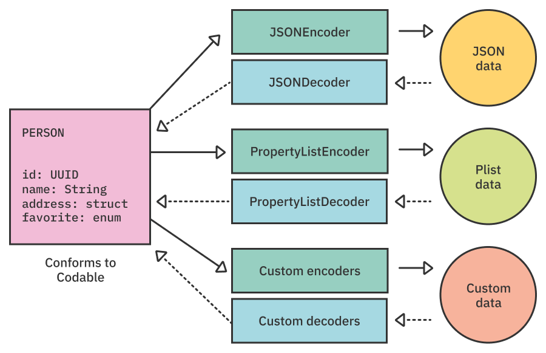
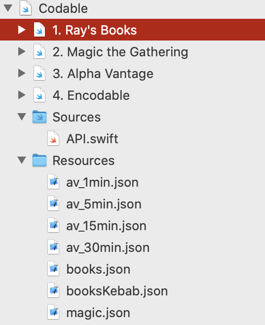
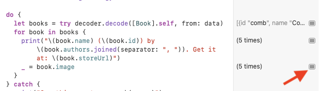
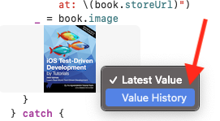
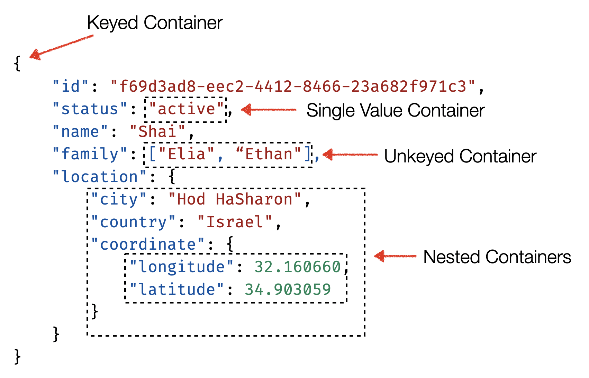
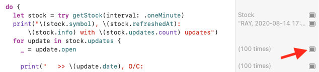
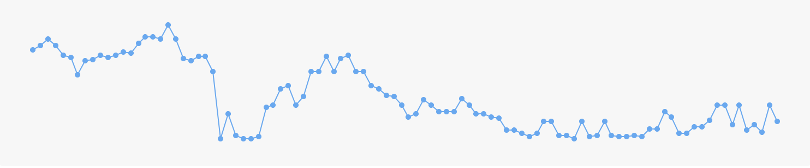

第8章：Codable¶
在开发你的应用程序时，你经常会处理无数的数据模型和各种外部数据片断，你想在你的应用程序中表示为数据模型。
为了解决这个问题，你经常会使用一种叫做序列化的技术，在这种技术中，你以多种平台支持的许多可消费格式之一来创建数据模型的外部表示。到目前为止，最受欢迎的是JSON（Javascript Object Notation）。
在苹果的平台上对数据序列化的需求是如此的普遍，以至于他们早在Xcode 3.0中就解决了这个问题，引入了NSCoding，让你描述如何对数据进行编码和解码。
不幸的是，NSCoding虽然在当时是一个令人难以置信的抽象，但却有很多问题，缺乏适合Swift世界的现代触觉--比如自动合成的编码和解码，对值类型的支持等等。进入Codable。
什么是Codable?¶
Codable是一个类型别名，结合了两个协议。Encodable和Decodable。这些协议让你定义对象如何被编码和解码到外部数据表示，例如JSON。
Codable的伟大之处在于，它对编码和解码的格式基本没有影响。它使用一组额外的抽象，称为Encoder和Decoder来实现这种分离。
这些抽象拥有关于如何编码和解码其特定数据格式的具体的亲密知识。例如，JSONEncoder知道如何将一个给定的数据模型编码为JSON响应，而PropertyListDecoder则知道如何将一个plist文件解码为一个给定的数据模型。
这种抽象意味着你的对象只需要符合一次Codable或其任何一部分，并且可以使用各种编码器和解码器对许多不同的格式进行编码和解码。

你会学到什么，以及你不会学到什么¶
因为这是一本高级书籍，你将快速浏览基本的Codable知识，主要集中在Codable黑暗角落的高级材料上。
由于JSON代表了绝大多数Codable的使用情况，你将专注于使用JSONEncoder和JSONDecoder，本章的大部分内容集中在Decodable部分。
具体来说，你将研究三个真实的API响应，并为它们编写适当的Decodable和Encodable符合性，教你处理最奇怪的响应所需的一切。
刷新基础知识¶
当对一个数据结构进行解码或编码时，你经常可以使用Codable，而实际上没有任何模板。
给出下面的JSON：
{
"name": "Shai Mishali",
"twitter": "@freak4pc",
"github": "https://github.com/freak4pc",
"birthday": "October 4th, 1987"
}
以及以下的Person的struct：
struct Person {
let name: String
let twitter: String
let github: URL
let birthday: Date
}
为了使Person与它的JSON结构兼容，你所要做的就是简单地将它与Codable相适应，像这样：
struct Person: Codable {
...
}
并使用适当的编码器或解码器：
// Decode
let decoder = JSONDecoder()
let person = try decoder.decode(Person.self, from: jsonData)
// Encode
let encoder = JSONEncoder()
let jsonData = try encoder.encode(person)
Swift知道将JSON中的键与Person结构中的键相匹配，甚至知道如何将String日期和URL自动转换为Swift的Date和URL!
你会在本章后面了解到更多关于Swift如何知道自动为你做这些事情。
有了这个快速的复习，现在是时候进行一些API的工作了！
API #1: 雷的书¶
开始使用¶
打开在projects/starter中找到的startter playground，看看左边的Navigation窗口：

你会注意到一些事情：
Playground包含多个页面，每个页面代表一个不同的API。Sources文件夹包含一个API助手，您将在本章中使用它。Resources文件夹包含JSON文件，其中包含您将在本章中与之交互的响应。
打开books.json并记下响应的JSON结构：
[
{
"id": "comb",
"name": "Combine: Asynchronous Programming with Swift",
"store_link": "https://store.raywenderlich.com/...",
"authors": [
"Scott Gardner",
"Shai Mishali",
"Forent Pillet",
"Marin Todorov"
],
"image_blob": "..."
}
]
此文件提供了一系列来自raywenderlich.com图书目录的图书。
解码基础¶
打开页面1.Ray's Books。 解码响应的最简单方法是从您从Swift“免费”获得的属性开始。
将以下代码添加到您的playground：
struct Book: Decodable {
let id: String
let name: String
let authors: [String]
}
在您的新结构体上方，添加以下代码来试验一下：
let data = API.getData(for: .rwBooks)
let decoder = JSONDecoder()
do {
let books = try decoder.decode([Book].self, from: data)
print("—— Example of: Books ——")
print(books)
} catch {
print("Something went wrong: \(error)")
}
运行你的playground，你会看到类似于以下内容的响应：
—— Example of: Books ——
__lldb_expr_1.Book(id: "comb", name: "Combine: Asynchronous Programming with Swift", authors: ["Scott Gardner", "Shai Mishali", "Forent Pillet", "Marin Todorov"]), ...])]
好的！ 你已经掌握了基础知识。 您现在将学习如何解码其他字段，从store_link开始。
关键解码策略¶
将以下属性添加到Book：
let storeLink: URL
运行你的Playground。 您会看到以下错误：
—— Example of: Books ——
keyNotFound(CodingKeys(stringValue: "storeLink", intValue: nil), ... debugDescription: "No value associated with key CodingKeys(stringValue: \"storeLink\", intValue: nil")
正如错误所描述的，在JSON响应中不存在名为storeLink的键。但是，有一个叫做store_link的键！
Codable的自动合成键使用一对一的映射，所以解码器不知道它应该把store_link这个snake-cased key翻译成storeLink这个骆驼形键。
幸运的是，JSONDecoder 提供了一个非常有用的概念，称为key-decoding strategy，它告诉解码器应该如何将响应键转换为Swift的camel-cased key。
snake-case选项非常常见，它已经内置到JSONDecoder中。
在以下代码行下方：
let decoder = JSONDecoder()
添加此代码：
decoder.keyDecodingStrategy = .convertFromSnakeCase
这告诉JSON解码器根据需要自动转换snake-cased key。
再次运行你的playground，你就可以开始了：
—— Example of: Books ——
[__lldb_expr_5.Book(... storeLink: https://store.raywenderlich.com/products/combine-asynchronous-programming-with-swift), ...]
数据解码策略¶
四个键已解码，还有最后一个键 - image_blob。这个键包含了图像数据的Base 64表示，所以你可以很容易地将小的缩略图和你的JSON响应一起传送。
使用Decodable对数据进行解码并不像听起来那么难。它使用了一个类似于钥匙解码策略的概念--data decoding strategy。
有了数据解码策略，每当JSONDecoder看到一个Data类型的属性，它就会检查数据解码策略，以确定它应该如何将JSON数据翻译成Swift的Data类型。
在你之前添加的keyDecodingStrategy下面，添加以下一行：
decoder.dataDecodingStrategy = .base64
最后，给Book添加以下两个属性：
let imageBlob: Data
var image: UIImage? { UIImage(data: imageBlob) }
上面的代码定义了Base 64作为数据解码策略（这也是默认的），一个imageBlob属性与你的JSON响应中的image_blob键相关联，最后，用一个image计算属性来包装一切，你可以用来查看图像本身。
在示例中的do块内，将print(books)替换为：
for book in books {
print("\(book.name) (\(book.id))",
"by \(book.authors.joined(separator: ", ")).",
"Get it at: \(book.storeLink)")
_ = book.image
}
运行playground，您将看到类似于以下内容的输出：
—— Example of: Books ——
Combine: Asynchronous Programming with Swift (comb) by Scott Gardner, Shai Mishali, Forent Pillet, Marin Todorov. Get it at: https://store.raywenderlich.com/products/combine-asynchronous-programming-with-swift
...
在右侧区，在写着_ = book.image的一行，按显示结果按钮：

然后，右键点击产生的图像区域，选择值历史：

现在你可以滚动并从你的JSON响应中看到所有加载的Base 64解码的图片。很好！你还没有用完Ray Books API。
你还没有完成Ray Books API的学习。在结束之前，你要绕一个小弯，多了解一下CodingKeys。
了解编码键¶
一个CodingKey是一个简单的协议，描述一个特定属性的键是如何表示的。它有两个属性。stringValue，用于字符串键，如你刚才看到的那些，和一个可选的intValue，用于键是数组的一部分的情况：
public protocol CodingKey {
var stringValue: String { get }
var intValue: Int? { get }
init?(stringValue: String)
init?(intValue: Int)
}
它可以用数字键或字符串键进行解码，但不能同时进行。
如果你回想一下你之前看到的解码错误，一个stringValue为storeLink的CodingKey在原始响应中没有找到，直到你添加了适当的密钥解码策略。
当你的属性与JSON响应的属性完全匹配时，你不需要手动创建任何编码键。然而，只要其中有一个需要自定义键，你就需要定义你自己的编码键。
一个常见的方法是使用一个原始值为String的enum。没有必要把这个复制到你的playground。
enum CodingKeys: String, CodingKey {
case id, name, authors
case storeLink = "store_link"
case imageBlob = "image_blob"
}
当你明确指定了如上所示的编码键，你就不需要键解码策略了。
自定义密钥解码策略¶
如前所述，本节还有最后一个挑战要给你解决：创建你自己的解码策略。
替换下面这一行：
let data = API.getData(for: .rwBooks)
为这行:
let data = API.getData(for: .rwBooksKebab)
这使用了Ray's Books API的kebab-case版本，意味着store_link现在是store-link，image_blob现在是image-blob。
运行你的playground，你会发现一个新的错误在等着你：
[...] No value associated with key CodingKeys(stringValue: \"storeLink\", intValue: nil) (\"storeLink\"), converted to store_link."
正如错误中提到的，解码器试图将storeLink转换为store_link，但在JSON响应中找不到与之匹配的键。
不幸的是，没有内置的convertFromKebabCase解码策略，所以你只能自己做一个!
你可以使用的密钥解码策略之一，恰如其分地命名为.custom，让你完全控制密钥的解码和转换。
在Playground的最后，添加以下代码：
extension JSONDecoder.KeyDecodingStrategy {
static var convertFromKebabCase: JSONDecoder.KeyDecodingStrategy = .custom({ keys in
})
}
这个新的静态属性返回一个自定义的密钥解码策略，它接收一个CodingKey数组并返回一个单一的、经过转换的编码密钥。现在不用担心编译错误。
在你新的自定义策略中加入以下几行：
// 1
let codingKey = keys.last!
let key = codingKey.stringValue
// 2
guard key.contains("-") else { return codingKey }
// 3
let words = key.components(separatedBy: "-")
let camelCased = words[0] +
words[1...].map(\.capitalized).joined()
return ???
在这个代码中，你：
- 获取数组中的最后一个编码键。编码键的数组代表了从JSON响应的根到你正在处理的特定键的整个路径，所以在这种情况下，你只对最后一个感兴趣。
- 如果键不包含破折号，它肯定不是
kebab-case，所以你要按原样返回编码键。 - 如果是
kebab-case，你用破折号分割键，除了第一个字以外，其他每个字都大写。
camelCased现在包含了你需要的kebab-case-turned-camel-case键。但是，你在最后应该返回什么呢？一个CodingKey!
不幸的是，你不能直接实例化一个，因为它是一个协议。但是你可以很容易地写出你自己的具体辅助类型来帮助完成这个任务。把下面这段代码添加到你的playground：
struct AnyCodingKey: CodingKey {
let stringValue: String
let intValue: Int?
init?(stringValue: String) {
self.stringValue = stringValue
self.intValue = nil
}
init?(intValue: Int) {
self.intValue = intValue
self.stringValue = "\(intValue)"
}
}
这个AnyCodingKey类型只是让你用整数或字符串实例化一个CodingKey。这个确切的实现实际上是苹果文档的一部分，但不幸的是，它目前不是标准库的一部分。
准备好你的新的AnyCodingKey后，你可以最终确定你的自定义密钥解码实现。
将return ???替换为以下内容：
return AnyCodingKey(stringValue: camelCased)!
最后，替换以下一行：
decoder.keyDecodingStrategy = .convertFromSnakeCase
为下面这行：
decoder.keyDecodingStrategy = .convertFromKebabCase
这将告诉JSONDecoder使用你新的自定义密钥解码策略。
最后一次运行你的playground页面，一切都应该像以前一样工作。好啊!
让这个API与Swift的类型系统进行漂亮而优雅的解析花了点功夫，但看看你到目前为止已经学到了多少东西。而且你才刚刚开始。是时候迎接下一个挑战了!
API #2：《魔法：聚集》¶
《魔术：集结号》是第一款现代交易卡牌游戏，它仍然在该类型的粉丝中受到疯狂欢迎。各种卡牌有不同的力量、稀有度、类型等等，并跨越了20多个不同的卡组。
在这一节中，你将致力于创建一个自定义的Decoder来解码来自https://magicthegathering.io/的实际响应，该API整合了关于这些卡的数据。
要想开始，请切换到playground页面，2.Magic the Gathering，看看周围。Playground已经包括了一些模板代码以节省时间，它获取API响应并将其解码为一个基本的struct，所有的键都是自动合成的。
运行playground，你会看到基本的东西已经开始运行了：
🃏 Archangel of Thune #8
🃏 Thoughtseize #110
🃏 Batterskull #130
🃏 Force of Will #28
🃏 Krenko, Mob Boss #15
🃏 Rishkar’s Expertise #123
打开Resources文件夹中的magic.json，可以看到你在本节中要处理的有点复杂的数据结构。当你准备好了，就转到下一节。
解码卡的法力值¶
每张牌都有一个叫做Mana Cost的东西--将牌投入游戏所需的费用。JSON响应中的第一张牌的manaCost是{3}{W}{W}，这意味着三张任何颜色的牌（无色）和两张白色法力牌。
响应使用了一个字符串，但它在Swift中可以有一个更好的、类型化的表示。
为了做到这一点，你将添加两个新的数据类型。Card.Mana，它将表示法力值，并包括一个Card.Mana.Color的数组--一个各种法力值颜色选项的enum。
在Playground页面的末尾添加以下代码：
extension Card {
/// Card's Mana
struct Mana: CustomStringConvertible {
// 1
let colors: [Color]
// 2
var description: String { colors.map(\.symbol).joined() }
}
}
extension Card.Mana {
/// Card's Mana Color
enum Color {
// 3
case colorless(Int)
case extra
case white
case blue
case black
case red
case green
// 4
var symbol: String {
switch self {
case .white: return "W"
case .blue: return "U"
case .black: return "B"
case .red: return "R"
case .green: return "G"
case .extra: return "X"
case .colorless(let number): return "\(number)"
}
}
}
}
下面是上述代码的分类：
- 你定义了一个新的
Card.Mana类型，它有一个Card.Mana.Color模型的数组。 Mana也符合CustomStringConvertible并打印出法力值的颜色符号，加入。Color枚举包含所有单独的法力颜色的情况，以及.colorless，它有一个无色法力数量的关联值。- 最后，法力颜色有一个
symbol的计算属性，用来打印出法力颜色的单字符号。
到目前为止，很好。但是你如何真正使Mana符合Decodable的方式来处理源字符串5{W}{W}？Codable显然不能知道如何自动翻译这些信息。
这时，一个自定义的Decodable一致性证明是非常有用的。
首先，你要给Card.Mana.Color添加一个初始化器，接受法力符号。你将在Mana本身的Decodable一致性中使用它。
在Card.Mana.Color的enum中添加以下初始化器：
init?(symbol: String) {
if let value = Int(symbol) {
self = .colorless(value)
return
}
switch symbol.lowercased() {
case "w":
self = .white
case "u":
self = .blue
case "b":
self = .black
case "r":
self = .red
case "g":
self = .green
case "x":
self = .extra
default:
print("UNKNOWN \(symbol)")
return nil
}
}
这个初始化器只是接受符号，如W或3，并返回适当的enum情况。如果数值是数字，它将返回.colorless情况和相关的数字值。
在你进入下一节之前，你会想了解更多关于编码和解码在Codable中的结构的基础之一 - 容器。
了解容器¶
如果你曾经写过一个自定义的Decodable或Encodable初始化器，很可能你已经相应地使用了一个解码或编码容器：

有三种独特的容器类型：
Keyed Container：最常见的一种容器。在上面的例子中，你对一个字典进行解码，键是由一组CodingKey组成的，所以叫这个名字。Unkeyed Container：顾名思义，你用它来解码那些没有基于字符串的编码键的结构--比如说数组。Single Value Container：当把一个单一的值解码成一些具体的类型时，使用这个。在上面的例子中，你可以有一个Status enum，有一个自定义的解码器，使用一个单值容器来解析解码后的值。
这些容器都可以是嵌套的，也就是说它们可以是不同容器的子容器。
你可以把一个容器看作是你的解码或编码的上下文。
看看上面的例子，最上面的键控容器让你在id、status、name、family和location的上下文中工作，而最里面的coordinate嵌套容器让你在longitude和latitude的上下文中解码。
在本章中，你将同时使用键值和单值的容器。
为Card.Mana定制的可译码的一致性¶
随着Card.Mana.Color初始化器的准备就绪，现在是时候开始处理Card.Mana本身了。首先，通过替换Card.Mana与Decodable相符合：
struct Mana: CustomStringConvertible {
为：
struct Mana: Decodable, CustomStringConvertible {
然后，添加Decodable所需的初始化器：
init(from decoder: Decoder) throws {
}
当Swift能够确定如何正确解码你的响应时，它就会自动为你合成这个初始化器。例如，如果编码键与响应准确匹配。但更多时候，你会想要更细化的控制，就像在这个案例中。
记住，解码法力是在一个简单的String上工作，而不是在字典或数组上。如上所述，解决方案是使用一个single value container。
在你的新初始化器中加入以下代码：
let container = try decoder.singleValueContainer()
let cost = try container.decode(String.self)
你首先要求解码器提供一个单值容器。你基本上是在告诉解码器："嘿，这个类型只处理单值类型，而不是字典或其他复杂结构"。
因为这个容器只处理单一的值，它不需要编码键，你可以简单地尝试将它解码为你所期望的String。
现在你有了原始字符串，例如{5}{W}{W}，你可以进行必要的处理，把它分解成一个Color的数组。用下面的代码块完成你的初始化程序：
self.colors = try cost
.components(separatedBy: "}") // 1
.dropLast()
.compactMap { rawCost in
let symbol = String(rawCost.dropFirst()) // 2
// 3
guard !symbol.isEmpty,
let color = Color(symbol: symbol) else {
throw DecodingError.dataCorruptedError(
in: container,
debugDescription: "Unknown mana symbol \(symbol)")
}
// 4
return color
}
在这个代码中，你：
- 用
}符号分隔字符串，得到一个数组，如["{5", "{W", ""]。然后，你使用dropLast()来摆脱最后的空字符串。 - 剥离数组中每个部分的第一个字符，剩下的就是
["5", "W", "W"]。 - 尝试创建一个新的
Mana.Color实例，将干净的符号传递给你在上一节添加的初始化器。如果初始化器返回nil或符号为空，你将抛出一个DecodingError.dataCorruptedError来通知消费者这个意外结果。 - 如果你得到一个有效的颜色，你就简单地返回它。
在这个初始化器结束时，colors将包含一个严格类型的Mana.Color数组。
你已经很努力了，那么实际使用你的Mana对象怎么样？
实现法力对象¶
给Card添加以下属性：
let manaCost: Mana
一切构建成功，因为Mana也符合Decodable，所以你不需要做任何额外的工作。
最后，在文件顶部的for循环中，将print修改为如下内容：
print("🃏 \(card.name) #\(card.number), \(card.manaCost)")
运行playground，然后检查Mana对CustomStringConvertible的一致性所产生的输出：
🃏 Archangel of Thune #8, 3WW
🃏 Thoughtseize #110, B
🃏 Batterskull #130, 5
🃏 Force of Will #28, 3UU
🃏 Krenko, Mob Boss #15, 2RR
🃏 Rishkar’s Expertise #123, 4GG
虽然产生的输出是一个简单的String，但你的数据模型现在是一个实际的具体的 "enum"，你可以在Swift的类型系统中使用。
解码卡片的稀有度¶
卡片的稀有性大多很简单，包括一组固定的字符串。Common、Mythic Rare、Basic Land等等。
在你的playground底部添加以下扩展：
extension Card {
enum Rarity: String, CustomStringConvertible, Decodable {
case common = "Common"
case uncommon = "Uncommon"
case rare = "Rare"
case mythicRare = "Mythic Rare"
case special = "Special"
case land = "Basic Land"
var description: String { rawValue }
}
}
在上面的代码中，你创建了一个简单的Rarity enum，有相应的情况，也为每个情况提供了一个自定义的String值。这类似于一个单值容器，只是Swift在幕后为你处理了这些模板。
给Card添加以下属性：
let rarity: Rarity
另外，在顶部的print语句末尾添加, \(card.rarity)以查看新属性的结果：
🃏 Archangel of Thune #8, 3WW, Mythic Rare
🃏 Thoughtseize #110, B, Rare
...
作为本节的一部分，你还有三个属性需要处理。不幸的是，它们都需要Card提供一个自定义的Decodable初始化器。
为了节省一些时间，在Card中添加以下初始化器和CodingKeys enum：
init(from decoder: Decoder) throws {
let container = try decoder.container(keyedBy: CodingKeys.self)
self.id = try container.decode(UUID.self, forKey: .id)
self.name = try container.decode(String.self, forKey: .name)
self.manaCost = try container.decode(Mana.self,
forKey: .manaCost)
self.type = try container.decode(String.self, forKey: .type)
self.rarity = try container.decode(Rarity.self,
forKey: .rarity)
self.text = try container.decodeIfPresent(String.self,
forKey: .text) ?? ""
self.flavor = try container.decodeIfPresent(String.self,
forKey: .flavor)
self.number = try container.decode(String.self,
forKey: .number)
self.imageUrl = try container.decodeIfPresent(URL.self,
forKey: .imageUrl)
}
enum CodingKeys: String, CodingKey {
case id, name, manaCost, type, rarity
case text, flavor, number, set, setName
case power, toughness, rulings, imageUrl
}
上面的代码基本上是Swift到目前为止为你自动合成的东西的手动实现。但正如前面提到的，你很容易就会遇到你的模型与你的响应不直接相关的情况。在这种情况下，Codable让你有能力把事情掌握在自己手中。
解码卡片的集合和属性¶
卡牌是作为套装的一部分发布的，其中包含一个名称和一个符号。每张生物卡还具有power和toughness，它们决定了生物的攻击力有多强以及它能承受多少伤害。
不幸的是，set、setName、power和toughness都分散在JSON响应中。把它们放在自己的结构中不是更有美感和Swifty吗？为什么呢，当然了!
首先，将以下两个struct添加到你的playground的末尾：
extension Card {
struct Attributes {
let power: String
let toughness: String
}
}
extension Card {
struct Set {
let id: String
let name: String
}
}
这段代码定义了Card.Attributes，它统一了power和toughness，以及Card.Set，它统一了set和setName。
在这种特殊情况下，你不能简单地将这些对象符合Decodable，因为它们对你的原始响应的单一属性不起作用。你要根据需要对每个值进行解码，并手工构建这些对象以达到想要的结果。
首先给Card添加以下两个属性：
let set: Set
let attributes: Attributes?
接下来，在你的自定义Decodable初始化器的末尾，添加以下代码：
// 1
// Set
self.set = Set(id: try container.decode(String.self,
forKey: .set),
name: try container.decode(String.self,
forKey: .setName))
// 2
// Attributes
if let power = try container.decodeIfPresent(String.self,
forKey: .power),
let toughness = try container.decodeIfPresent(String.self,
forKey: .toughness) {
self.attributes = Attributes(power: power,
toughness: toughness)
} else {
self.attributes = nil
}
在上面的代码中，你试图同时创建Set和Attributes：
- 你初始化了
Set，并直接提供对container.decode(_:forKey:)的调用作为它的参数。如果缺少任何一个属性，初始化器将抛出一个错误，因为Set是强制性的。 power和toughness是可选的，因为它们只适用于生物牌。你使用decodeIfPresent来尝试从容器中解码这两个值。如果它们存在，你就从它们中初始化一个新的Attributes实例。否则，你将Attributes设置为nil。
现在你已经将JSON响应中的大部分数据解码到你的Card模型中。用下面的语句替换你的游戏场顶部的for循环中的print语句：
print(
"🃏 \(card.name) #\(card.number) is a \(card.rarity)",
"\(card.type) and needs \(card.manaCost).",
"It's part of \(card.set.name) (\(card.set.id)).",
card.attributes.map { "It's attributed as \($0.power)/\($0.toughness)." } ?? ""
)
在这里，你只是简单地以美化的方式打印出关于卡片的一切，并使用Optional的map方法有条件地打印卡片的属性。
运行这个playground，你会看到如下的输出：
🃏 Archangel of Thune #8 is a Mythic Rare Creature — Angel and needs 3WW. It's part of Iconic Masters (IMA). It's attributed as 3/4.
🃏 Thoughtseize #110 is a Rare Sorcery and needs B. It's part of Iconic Masters (IMA).
...
你将用最后一项财产来结束本节。多么令人激动啊!
解码牌的裁决¶
每张牌都拥有一个裁决数组，包含了该牌历史上的日期和文字裁决。
不过说实话，裁决的日期并不太有趣。在这种情况下，如果有一个简单的String裁决数组就好了。
这需要进行最后一轮的Decodable处理。
首先，给Card添加以下属性：
let rulings: [String]
现在，是时候在Card的初始化器中添加你需要的解码了。你可以采取以下两种方法之一：
- 定义一个符合
Decodable的private Ruling结构，只提取其text。 - 直接将属性解码为一个
Dictionary，只直接提取其text键。
尽管这两种方法都是完全有效的，但你今天将使用第二种方案。尽管这个介绍相当冗长，你只需要在初始化器的末尾添加以下两行即可：
// Rulings
let rulingDict = try container.decode([[String: String]].self,
forKey: .rulings) // 1
self.rulings = rulingDict.compactMap { $0["text"] } // 2
有了这个代码，你就可以：
- 将
rulings键解码为一个原始的字典数组。这与API响应中rulings的结构方式直接相关。 - 在数组上使用
compactMap，尝试只提取每个裁决字典的text。
裁决是相当冗长的，所以你要为它们添加一个单独的print语句。在文件顶部的for循环内，添加：
print("Rulings: \(card.rulings.joined(separator: ", "))")
运行playground，你会看到为每张牌打印出来的各种裁决：
🃏 Archangel of Thune #8 is a Mythic Rare Creature — Angel and needs 3WW. It's part of Iconic Masters (IMA). It's attributed as 3/4.
Rulings: Archangel of Thune’s last ability triggers just once for each life-gaining event, whether it’s 1 life from Auriok Champion or 6 life from Tavern Swindler. [...]
哇，你在这里经历了一次大规模的解码会议。给你点赞! 现在，终于到了本章最后一个Decodable挑战的时候了。
API #3：Alpha Vantage¶
你将最后处理最具挑战性的任务。
有时，你会得到一些特殊的工作。一个巨大的、非标准的反应，让你抓耳挠腮，说。"我不知道如何解码这个东西！"
本节将讨论的正是这一类的API：Alpha Vantage。
Alpha Vantage提供围绕股票、外汇、加密货币等的免费金融API。你今天要用的是股票API。
打开Resources文件夹中的av_1min.json，你可能会注意到这个响应所带来的一些挑战：
- 所有的静态键都比较奇怪，而且有些是有编号的。
Time Series键实际上是动态的，取决于你向API询问的分钟间隔。它可能是Time Series (1 min)，Time Series (5 min)，或任何其他键。- 如果这还不够，
Time Series键里面的每个键都是动态的和日期。
呀。
这种反应本身可能是相当痛苦的，但Swift的严格类型化性质使其更具挑战性。不过，这并不是你不能处理的问题
探索启动页¶
在导航窗格中，打开3.Alpha Vantage的页面。你会发现那里已经有一些启动代码在等着你了：
getStock(interval:)。用于检索股票的信息，以及特定时间段的更新。Stock。一个空的结构，等待您来填写。- 调用
getStock(interval:)会打印出解码后的Stock。
分析响应¶
如果你再看一下av_1min.json，你会发现其结构看起来与下面类似：
{
"Meta Data": {
"1. Information": "Intraday (1min) open...",
"2. Symbol": "RAY",
"3. Last Refreshed": "2020-08-14 20:00:00"
},
"Time Series (1min)": {
"2020-08-14 20:00:00": {
"1. open": "101.9000",
"2. high": "102.0000",
"3. low": "101.9000",
"4. close": "102.0000",
"5. volume": "1807"
},
[...]
}
}
这的确是一个相当复杂的结构。在Swift中，消费者通常喜欢直接访问嵌套的属性，而不需要在原始JSON响应中进行过多的嵌套。
从最基本的开始，在Stock struct中添加以下两个属性：
let info: String
let symbol: String
对嵌套的元数据进行解码¶
因为Stock的结构与JSON响应不直接相关，你需要一个自定义解码初始化器。添加以下初始化器，以及顶层和Meta Data层的编码键：
init(from decoder: Decoder) throws {
// 1
let container = try decoder.container(
keyedBy: CodingKeys.self
)
}
// 2
enum CodingKeys: String, CodingKey {
case metaData = "Meta Data"
case updates = "Time Series (1min)"
}
// 3
enum MetaKeys: String, CodingKey {
case info = "1. Information"
case symbol = "2. Symbol"
case refreshedAt = "3. Last Refreshed"
}
这段代码会导致一个编译错误，但现在不要担心这个问题。它：
- 创建一个以
CodingKeys为关键字的顶级容器。 - 为该顶层定义
CodingKeys，代表元数据和时间序列的键。 - 定义
MetaKeys来代表元数据键里面的各个键。
完成这些后，你现在可以对你的股票的info和symbol属性进行解码。但是怎么做呢？
如果你还记得本章前面关于容器的解释，答案可能已经出现在你的脑海中了--只要使用一个嵌套的容器。
使用嵌套容器¶
首先，在你的初始化程序中加入以下一行：
let metaContainer = try container.nestedContainer(
keyedBy: MetaKeys.self,
forKey: .metaData
)
在下面一行中，你要求顶级容器给你一个新的、嵌套的容器，它代表元数据。基本上，你在要求顶层容器。"给我一个新的.metaData键的解码上下文，我可以使用MetaKeys编码键进行解码"。
现在你可以访问元数据范围了，剩下的就是对各个属性进行解码。紧接着前面的一行添加以下内容：
self.info = try metaContainer.decode(String.self, forKey: .info)
self.symbol = try metaContainer.decode(String.self,
forKey: .symbol)
你从相应的键值中解码两个单独的String值。注意forKey参数中的可用键是MetaKeys中的键，因为那是你目前正在处理的解码容器。
Swift的类型系统真的有助于为任务获得正确的键。
运行playground。你会看到与下面类似的输出：
Stock(info: "Intraday (1min) [..]", symbol: "RAY")
伟大的工作! 做完这些，还有两个信息需要解码：最后的刷新日期和股票的个别更新。
解码自定义日期格式¶
首先，在Stock中添加以下属性：
let refreshedAt: Date
然后，在Stock的初始化器末尾添加以下一行，以解码日期：
self.refreshedAt = try metaContainer.decode(
Date.self,
forKey: .refreshedAt
)
运行playground，你会看到以下错误：
typeMismatch(...debugDescription: "Expected to decode Double but found a string/data instead."...)
默认情况下，对日期的解码希望有一个Unix的时间戳作为其来源。但在Alpha Vantage的API中，你有一个格式化的字符串日期，比如。2020-08-14 20:00:00.
幸运的是，就像JSONDecoder的密钥解码策略一样，你也可以选择一个日期-解码策略。在编写本章时，JSONDecoder中有六种日期解码策略。
虽然你可能很想伸手去拿custom解码策略，就像钥匙解码策略一样，但有一个更合适的策略叫formatted，它采取一个DateFormatter并使用它来解码Date。现在是时候让你试试这个了。
首先，你要创建一个DateFormatter。在getStock(interval:)上面，在全局范围内，添加以下代码：
let dateFormatter: DateFormatter = {
let df = DateFormatter()
df.dateFormat = "yyyy-MM-dd HH:mm:ss"
return df
}()
你刚刚为Alpha Vantage的JSON响应创建了一个DateFormatter，具有适当的dateFormat。
Note
我强烈推荐https://nsdateformatter.com/来创建完美的dateFormat字符串，而不需要太多麻烦。
现在，你所要做的就是把解码策略应用到你的解码器上。在getStock(interval:)内创建JSONDecoder后，添加以下一行：
decoder.dateDecodingStrategy = .formatted(dateFormatter)
这将导致JSONDecoder总是将日期的解码推迟到底层的NSDateFormatter。
再次运行你的playground，一切都应该正常，输出结果类似于以下：
Stock(info: "Intraday (1min) ..., symbol: "RAY", refreshedAt: 2020-08-14 17:00:00 +0000)
很好，一切都几乎准备好了，但你仍然有一个很大的挑战--对时间序列键中的个别更新进行解码。
解码单个股票的更新¶
和以前一样，最好是尝试并定义你希望数据结构最终在Swift中的样子。
在这种情况下，如果有一个updates的数组可以直接在Stock上使用，而不是像原来的响应那样需要挖掘一个字典的字典，那就更好了。
你将从底层开始，定义一个更新应该是什么样子的。在你的游乐场的末尾添加以下扩展：
extension Stock {
struct Update: Decodable, CustomStringConvertible {
// 1
let open: Float
let high: Float
let low: Float
let close: Float
let volume: Int
var date = Date.distantPast
// 2
enum CodingKeys: String, CodingKey {
case open = "1. open"
case high = "2. high"
case low = "3. low"
case close = "4. close"
case volume = "5. volume"
}
init(from decoder: Decoder) throws {
let container = try decoder.container(keyedBy: CodingKeys.self)
// 3
self.open = try Float(container.decode(String.self,
forKey: .open)).unwrapOrThrow()
self.high = try Float(container.decode(String.self, forKey: .high)).unwrapOrThrow()
self.low = try Float(container.decode(String.self, forKey: .low)).unwrapOrThrow()
self.close = try Float(container.decode(String.self, forKey: .close)).unwrapOrThrow()
self.volume = try Int(container.decode(String.self, forKey: .volume)).unwrapOrThrow()
}
// 4
var description: String {
"\(date)|o:\(open),h:\(high),l:\(low),c:\(close),v:\(volume)"
}
}
}
这段代码代表了每次更新的样子。它是为了解码时间序列键中每个日期键里面的内部字典。
下面是具体内容：
- 你创建属性来匹配响应中的各个更新。你还添加了一个
date属性，你马上就会用到它。 - 你为每个解码的属性定义必要的自定义编码键。
- 因为响应中的值是字符串，所以你将它们解码为字符串，并试图根据需要将它们转换为
Float或Int。为了验证铸造成功，你还在Optional上使用自定义的unwrapOrThrow()，这可以在Optional+Ext.swift找到。 - 最后，你为更新提供一个人类可读的输出。
解码更新到股票¶
现在，要处理Stock本身。首先给它添加以下属性：
let updates: [Update]
棘手的部分是，每个更新都是在一个未知的、动态的键下进行的。不仅如此，这个键也是你希望与每个Update相关的日期。
动态键......嗯，这有什么印象吗？是时候使用一些AnyCodingKey魔法了!
这种情况有点棘手--你甚至不知道你需要创建的动态键是什么，所以你将从获得这些开始。
在Stock的初始化程序中，添加以下几行：
let timesDictionary = try container.decode(
[String: [String: String]].self,
forKey: .updates
)
let timeKeys = timesDictionary.keys
.compactMap(AnyCodingKey.init(stringValue:))
因为你不知道Time Series (1 min)键里面的动态键，你只需将整个结构解码为一个原始字典的字典。然后你只得到键（即日期），并从它们中创建新的AnyCodingKey。最后，你将它们存储在timeKeys中。
为了使用这些键，你需要再次使用一个嵌套容器。添加以下一行：
let timeContainer = try container.nestedContainer(
keyedBy: AnyCodingKey.self,
forKey: .updates
)
像以前一样，你为.dewards编码键创建一个嵌套容器，意思是Time Series (1 min)。然而，这一次，请注意它是由AnyCodingKey键入的，因为没有像你的基于enum的编码键的有限集合。
现在一切都准备好了，可以对你的个人更新进行解码。你所要做的就是遍历你所创建的新键，并对它们进行解码。
解码你的新键¶
用这段代码最终完成你的初始化程序：
// 1
self.updates = try timeKeys
.reduce(into: [Update]()) { updates, currentKey in
// 2
var update = try timeContainer.decode(Update.self,
forKey: currentKey)
// 3
update.date = dateFormatter
.date(from: currentKey.stringValue) ?? update.date
// 4
updates.append(update)
}
.sorted(by: { $0.date < $1.date }) // 5
这可能看起来有点复杂，但一旦你把它分解开来就容易了。在上面概述的代码中，你：
- 对你创建的
timeKeys使用reduce(into:)。你从一个空的Update数组的种子开始，随着你的操作，你会把它填满。 - 使用
timeContainer，即范围在时间序列键上的那个，来解码在currentKey键中发现的单个更新。 - 使用你之前创建的相同的
DateFormatter，尝试将字符串日期解析为Date对象。这是因为，如前所述，更新的日期实际上就是键本身。 - 将新的更新追加到
reduce结果数组中：updates。 - 按日期对所有的更新进行排序，一旦它们被解析出一个字典。
测试你的股票解码¶
为了测试你刚才所做的所有不可思议的工作，在Stock下面，将print(stock)替换为以下内容：
print("\(stock.symbol), \(stock.refreshedAt):",
"\(stock.info) with \(stock.updates.count) updates")
for update in stock.updates {
_ = update.open
print(" >> \(update.date), O/C: \(update.open)/\(update.close), L/H: \(update.low)/\(update.high), V: \(update.volume)")
}
在这里，你只需打印出股票信息和每个单独的更新。运行你的playground，你会看到类似以下的输出：
RAY, 2020-08-14 17:00:00 +0000: Intraday (1min) [...] with 100 updates
>> 2020-08-14 15:02:00 +0000, O/C: 101.81/101.81, L/H: 101.81/101.81, V: 1020
>> 2020-08-14 13:55:00 +0000, O/C: 101.95/102.09, L/H: 101.95/102.09, V: 1765
>> ...
点击_ = update.open一行旁边的显示结果图标：

你会看到一个漂亮的图表，展示了该股票的开盘价值更新：

Note
如果你看不到图表，右键点击数值区域，将模式改为图表。
这有多酷啊？通过一些摆弄、嵌套容器和自定义的原始AnyCodingKey，你把这个极其庞大的、结构奇怪的JSON响应，变成了一个严格意义上的、容易消费的Swift结构。
你已经有了所有的解码逻辑，但仍然缺少一些东西。你能猜到它是什么吗？处理其他时间间隔!
在do块的顶部，替换以下一行：
let stock = try getStock(interval: .oneMinute)
为下面这一行：
let stock = try getStock(interval: .fifteenMinutes)
运行playground，你会看到一个与下面类似的错误：
... No value associated with key CodingKeys(stringValue: \"Time Series (1min)\", intValue: nil)[...]
哎呀! 你写的代码总是期待特定的键Time Series (1 min)，但在这种情况下，间隔时间实际上是15分钟。
你也可以在这里使用AnyCodingKey，但是你怎么知道在你的可解码初始化器里面，API调用的时间间隔是什么？在这个范围内你无法访问这些数据。
用用户信息键传递信息¶
你需要回答的问题是："我怎样才能把信息从外部世界传到我的可解码初始化器中？" 这个答案比你想象的要简单。
Codable解码器有一个叫做CodingUserInfoKey的类型。就像通知中的userInfo键和其他允许你传递键值对字典的结构一样，你可以通过这个具体的类型向解码器传递自定义信息。
在你的playground的最后，添加以下代码：
extension CodingUserInfoKey {
static let timeInterval = CodingUserInfoKey(
rawValue: "timeInterval"
)!
}
然后，在getStock(interval:)中，在let decoder = JSONDecoder()下面，添加以下一行：
decoder.userInfo = [.timeInterval: interval.rawValue]
通过这两段代码，你定义了一个具体的CodingUserInfoKey来代表你的时间间隔。然后，你把要求的时间间隔的原始值与该键一起传递给JSONDecoder。
现在解码器有了所有需要的信息，你需要相应地修改你的Stock的初始化器。替换Stock.init(from:)中的以下一行：
let container = try decoder.container(
keyedBy: CodingKeys.self
)
为以下代码：
// 1
guard let time = decoder.userInfo[.timeInterval] as? Int else {
throw DecodingError.dataCorrupted(
.init(codingPath: [],
debugDescription: "Missing time interval")
)
}
// 2
let metaKey = AnyCodingKey(stringValue: "Meta Data")!
let timesKey = AnyCodingKey(stringValue: "Time Series (\(time)min)")!
// 3
let container = try decoder.container(
keyedBy: AnyCodingKey.self
)
在这个代码中，你：
- 访问解码器的用户信息，并试图获得通过的时间间隔。如果它不存在，你就抛出一个错误。
- 创建两个
AnyCodingKey，代表元数据和时间序列密钥，使用动态时间间隔。你把元数据键换成AnyCodingKey，因为一个容器必须由一个具体类型来解码。 - 用一个由
AnyCodingKey支配的容器替换CodingKeys支配的容器。在这一点上，如果你想这样做，你可以完全删除CodingKeys enum。
为了解决最后三个编译错误，你应该：
- 将
forKey: .metaData替换为forKey: metaKey。 - 用
forKey: timesKey替换forKey: .update的两个实例。
完成这些后，最后一次运行你的游乐场，你会看到一切都像预期的那样，时间间隔动态地传递给解码器：
RAY, 2020-08-14 17:00:00 +0000: Intraday (15min) open, high, low, close prices and volume with 100 updates
...
请随意试验getStock(interval:)，用不同的时间间隔调用它，以确认它在所有情况下都能正常工作。
Encoding¶
本章的大部分内容都是关于解码的，因为这是日常工作中出现的大多数挑战的地方。但你肯定不会在离开这一章时，不至少接触一下方程式的另一面：Encoding。
在解码过程中，你把一个外部表示（比如JSON）解码成一个Swift类型。另一方面，编码让你描述如何将任意的Swift类型编码为各种外部表示。
在最后一节中，你将为一个Swift结构编写你自己的Encodable一致性，以探索你所掌握的各种选项。
探索启动页¶
在导航窗格中打开4.Encodable游戏页面，你会发现已经为你写了相当多的模板。
- 一个符合
Encodable的Encodable结构。 - 一个
Customer的实例。 - 使用
JSONEncoder()的代码来打印出编码后的JSON表示。
请注意，和Decodable一样，添加Encodable协议一致性就足以让Swift通过使用与属性相同的键为你的结构自动合成编码了。
另外，注意到JSONEncoder.encode(_:)返回数据而不是字符串。你使用String(data:encoding:)来使事情变得漂亮和可读。
运行你的playground，看看你从JSONEncoder得到的默认输出（简写）：
{"street":"3828 Piermont Drive","atmCode":"1132","city":"Albuquerque",...}
编码器定制¶
就像JSONDecoder的各种可定制的属性一样，JSONEncoder也有相当大的作用。你的第一个定制机会是输出格式化。在创建你的JSONEncoder后，立即添加以下一行：
encoder.outputFormatting = [.prettyPrinted,
.sortedKeys,
.withoutEscapingSlashes]
运行你的playground，你会看到类似以下的输出：
{
"accessKey": "S|_|p3rs3cr37",
"addedOn": 619552896.56153595,
[...]
"website": "http://github.com/freak4pc",
"zip": 87112
}
哇，这看起来已经很不一样了。你添加的代码定制了JSONEncoder输出数据的方式：
.prettyPrinted：适当地缩进并在JSON中添加新的行，使其更容易阅读。.sortedKeys：按字母顺序对JSON键进行排序。注意初始JSON键的样子，以及当前输出的样子。它以accessKey开始，以zip结束。.withoutEscapingSlashes：让你停用斜线的自动转义。默认情况下，斜线会用前面的反斜杠来转义，这对于演示来说可能不需要，比如本例中的website属性。
编码策略¶
就像Decodable有解码策略一样，Encodable有编码策略。keyEncodingStrategy, dateEncodingStrategy和dataEncodingStrategy。
在前面的行后添加以下两行来尝试这些：
encoder.keyEncodingStrategy = .convertToSnakeCase
encoder.dateEncodingStrategy = .iso8601
运行你的playground，你会看到你所有的键已经自动转换为蛇形大小写，而且日期现在是以ISO8601而不是普通的时间戳的形式呈现。
之前：
"addedOn": 619553518.18203104
之后：
"added_on": "2020-08-19T18:12:23Z"
用中间类型定制编码¶
你可能已经注意到，有两个属性--accessKey和atmCode--包含相当敏感的信息。在将对象编码为JSON之前，对这些信息进行加密是一个好主意。
你可以创建一个自定义编码器，根据需要手动对这些值进行编码和解码，但更优雅的选择是添加一个中间类型来负责这个工作。
将以下代码添加到你的playground页面的末尾：
struct EncryptedCodableString: ExpressibleByStringLiteral,
Codable {
let value: String
// 1
let key = SymmetricKey(data:
"Expert Swift !!!".data(using: .utf8)!)
// 2
init(stringLiteral value: StringLiteralType) {
self.value = value
}
// 3
init(from decoder: Decoder) throws {
let container = try decoder.singleValueContainer()
let combined = try container.decode(Data.self)
let result = try AES.GCM.open(.init(combined: combined),
using: key)
self.value = String(data: result, encoding: .utf8) ?? ""
}
// 4
func encode(to encoder: Encoder) throws {
var container = encoder.singleValueContainer()
let data = value.data(using: .utf8)!
let sealed = try AES.GCM.seal(data, using: key)
try container.encode(sealed.combined)
}
}
你刚刚定义了一个新的EncryptedCodableString，负责使用CryptoKit执行加密和解密，它已经被导入你的playground。
下面是详细介绍：
- 你定义了一个
CryptoKit对称密钥，出于教育目的，它使用了一个硬编码的弱密钥。在生产中，你应该使用安全地存储在钥匙链中的强散列钥匙。 - 你的类型符合
ExpressibleByStringLiteral，它允许你用一个原始的字符串字面来实例化它，而不用明确说明它的类型。 - 为了满足
Decodable的一致性，你定义了一个自定义的解码初始化器，并使用一个单值容器来解码一个String，然后用CryptoKit解密它。 - 为了满足
Encodable的一致性，你定义了一个自定义的encode(to:)方法，并使用一个单值容器来编码基础value的CryptoKit加密版本。
很好! 你如何实际使用这个？
只需将accessKey和atmCode的String替换为EncryptedCodableString。然后，运行你的操场页面，你会看到类似以下的输出：
{
"access_key" : "6CFbMLD0IojD7MaJwDH[...]iS4cr9i2vu0C2N/Q=",
"atm_code": "mZjZ17+VM8Nh0e3DwceF8hfT/6gplOD+n5c/jpNVIws="
[...]
}
你的字符串在编码为JSON时被特别加密了，你所要做的就是用你的新类型替换String类型。
这个概念有很多有用的应用：符合自定义属性包装器，自定义编码的特定格式，等等。
重组你的输出¶
作为本章的总结，你将了解到最后一件事：如何操作编码后的JSON的结构。
你得到了一些免费的自动合成的编码，但就像解码一样，为你的消费者想要不同的输出或结构是很常见的，而不是你的应用程序中的。
在这种情况下，你所要做的就是添加一个encode(to:)的自定义实现，并手动定义编码。在这种情况下，最好将用户的地址信息封装在address键中，将他们的联系信息封装在contactInfo键中。
在你这样做之前，在Customer中添加以下编码键：
enum CustomerKeys: String, CodingKey {
case name, accessKey, atmCode, addedOn, address, contactInfo
}
enum AddressKeys: String, CodingKey {
case street, city, zip
}
enum ContactInfoKeys: String, CodingKey {
case homePhone, cellularPhone, email
}
在这里，你定义了三套编码键：第一套用于顶层，还有两套编码键专门用于地址细节和联系信息。
现在是时候进行一些编码了，不是吗？
在Customer中添加以下encode(to:)的基本实现：
func encode(to encoder: Encoder) throws {
var customer = encoder.container(keyedBy: CustomerKeys.self)
try customer.encode(name, forKey: .name)
try customer.encode(accessKey, forKey: .accessKey)
try customer.encode(atmCode, forKey: .atmCode)
try customer.encode(addedOn, forKey: .addedOn)
}
你只需要求编码器提供一个基于CustomerKeys的键控容器来建立顶层响应。
Note
customer容器是可变的，所以你可以向它写东西。
运行playground，看看你目前的情况：
{
"access_key": "AwENrgpbFvL[...]XS57sWpOQ==",
"added_on": "2020-08-19T18:44:27Z",
"atm_code": "AwFkTXStHHy[...]FoUOdAGHfjuUwkw==",
"name": "Shai Mishali"
}
只有你所编码的键是响应的一部分。这很好，因为它意味着你可以为你的消费者定制任何你认为合适的响应。
Encoding客户的信息¶
接下来，你要处理客户的地址和联系信息。你能猜到怎么做吗？和解码一模一样，你可以在你的编码中使用嵌套容器来创建嵌套结构
添加以下几行来完成你的自定义编码器：
var address = customer.nestedContainer(
keyedBy: AddressKeys.self,
forKey: .address
)
try address.encode(street, forKey: .street)
try address.encode(city, forKey: .city)
try address.encode(zip, forKey: .zip)
var contactInfo = customer.nestedContainer(
keyedBy: ContactInfoKeys.self,
forKey: .contactInfo
)
try contactInfo.encode(homePhone, forKey: .homePhone)
try contactInfo.encode(cellularPhone, forKey: .cellularPhone)
try contactInfo.encode(email, forKey: .email)
这两个部分非常相似。在这两部分中，你：
- 向主容器
customer索取一个嵌套的keyed容器。第一个是基于AddressKeys，第二个是基于ContactInfoKeys。 - 简单地将
Customer的适当属性编码到每个容器中。一旦你有了这些嵌套的容器，每个都代表它自己的编码上下文。
建立并运行你的游乐场，看看你的定制响应：
{
"access_key": "AwE4[...]DFL+m6NOPNw==",
"added_on": "2020-08-19T18:50:26Z",
"address": {
"city": "Albuquerque",
"street": "3828 Piermont Drive",
"zip": 87112
},
"atm_code": "AwGw[..]Y7w==",
"contact_info": {
"cellular_phone": "+972 542-288-482",
"email": "freak4pc@gmail.com",
"home_phone": "+1 212-741-4695"
},
"name": "Shai Mishali"
}
Note
address和contact_info都代表了它们相应的键和你定义的嵌套容器。
这很好! 想想看--你可以有一个服务器端的Swift应用，使用自定义编码为你的数据模型提供一个消费者友好的表示，而不影响你自己的Swift模型。
作为对读者的练习，试着编写Customer的Decodable部分来"反转"JSONEncoder正在做的编码。你会惊讶于Decodable和Encodable的实现最终会有多么相似。
关键点¶
在这一章中你涵盖了很多内容。下面是一些关键的收获。
Codable是一种机制，让你定义如何在你的模型中解码和编码各种数据表现。- 如果你的键与你的属性完美匹配，
Swift可以自动为你做很多繁重的工作。 - 当自动合成的代码不能满足需要时，你可以完全控制自定义解码、编码或两者。
- 你可以使用键策略、数据策略、日期策略等来进一步定制特定的编码器和解码器如何处理特定类型的属性或其键。
- 当编写你自己的自定义编码和解码时，你可以使用各种类型的容器来获得不同的编码和解码环境。
- 如果你的键是动态的，或者事先不知道，你仍然可以根据需要使用
AnyCodingKey类型来利用Codable。
哇，这一章是什么？你已经学会了几乎所有关于数据解码的知识，并略微了解了如何使用各种容器类型对数据进行编码和自定义编码。
还有更多的东西需要学习和尝试：为共享结构抽象容器，利用具有自己的Codable符合性的属性包装器，为自定义类型编写自定义编码器和解码器，等等，但这本书只有这么多页。
现在，你已经准备好应对这个以JSON为中心的API世界向你抛出的任何问题了!